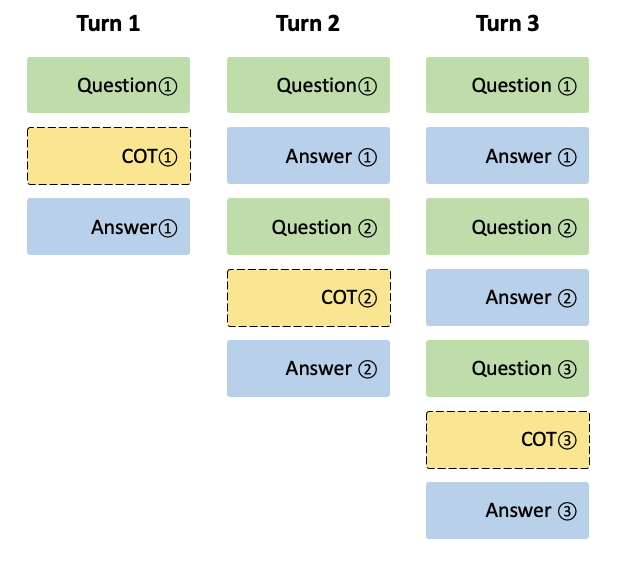

DeepSeek 聊天 #
Spring AI 支持 DeepSeek 中的各种 AI 语言模型。您可以与 DeepSeek 语言模型交互，并基于 DeepSeek 模型创建多语言对话助手。
先决条件 #
您需要使用 DeepSeek 创建一个 API 密钥才能访问 DeepSeek 语言模型。
在 [
DeepSeek 注册页面](
https://platform.deepseek.com/sign_up)创建一个帐户，并在 [
API 密钥页面上](
https://platform.deepseek.com/api_keys)生成令牌。
Spring AI 项目定义了一个名为 spring.ai.deepseek.api-key 的配置属性，您应该将其设置为从 API 密钥页面获取的 API 密钥的值。
您可以在 application.properties 文件中设置此配置属性：
spring.ai.deepseek.api-key=<your-deepseek-api-key>
为了在处理 API 密钥等敏感信息时增强安全性，您可以使用 Spring 表达式语言 （SpEL） 来引用自定义环境变量：
# In application.yml
spring:
ai:
deepseek:
api-key: ${DEEPSEEK_API_KEY}
# In your environment or .env file
export DEEPSEEK_API_KEY=<your-deepseek-api-key>
您还可以在应用程序代码中以编程方式设置此配置：
// Retrieve API key from a secure source or environment variable
String apiKey = System.getenv("DEEPSEEK_API_KEY");
添加存储库和 BOM #
Spring AI 工件发布在 Spring Milestone 和 Snapshot 存储库中。请参阅 [ Artifact Repositories](../../getting-started.html#artifact-repositories) 部分，将这些存储库添加到您的构建系统中。 为了帮助进行[ 依赖项管理](../../getting-started.html#dependency-management)，Spring AI 提供了一个 BOM（物料清单），以确保在整个项目中使用一致的 Spring AI 版本。请参阅[ 依赖项管理](../../getting-started.html#dependency-management)部分，将 Spring AI BOM 添加到您的构建系统中。
自动配置 #
Spring AI 为 DeepSeek 聊天模型提供 Spring Boot 自动配置。要启用它，请将以下依赖项添加到项目的 Maven pom.xml 文件中：
<dependency>
<groupId>org.springframework.ai</groupId>
<artifactId>spring-ai-starter-model-deepseek</artifactId>
</dependency>
或您的 Gradle build.gradle 文件。
dependencies {
implementation 'org.springframework.ai:spring-ai-starter-model-deepseek'
}
聊天属性 #
重试属性 #
前缀 spring.ai.retry 用作属性前缀，允许您为 DeepSeek Chat 模型配置重试机制。
连接属性 #
前缀 spring.ai.deepseek 用作允许您连接到 DeepSeek 的属性前缀。
配置属性 #
前缀 spring.ai.deepseek.chat 是允许您为 DeepSeek 配置聊天模型实现的属性前缀。
运行时选项 #
[
DeepSeekChatOptions.java](
https://github.com/spring-projects/spring-ai/blob/main/models/spring-ai-deepseek/src/main/java/org/springframework/ai/deepseek/[DeepSeekChatOptions.java](https://github.com/spring-projects/spring-ai/blob/main/models/spring-ai-deepseek/src/main/java/org/springframework/ai/deepseek/DeepSeekChatOptions.java)) 提供模型配置，例如要使用的模型、温度、频率损失等。
启动时，可以使用 DeepSeekChatModel(api, options) constructor 或 spring.ai.deepseek.chat.options.* properties 配置默认选项。
在运行时，您可以通过向 Prompt 调用添加新的特定于请求的选项来覆盖默认选项。例如，要覆盖特定请求的默认型号和温度：
ChatResponse response = chatModel.call(
new Prompt(
"Generate the names of 5 famous pirates. Please provide the JSON response without any code block markers such as ```json```.",
DeepSeekChatOptions.builder()
.withModel(DeepSeekApi.ChatModel.DEEPSEEK_CHAT.getValue())
.withTemperature(0.8f)
.build()
));
样品控制器（自动配置） #
[
创建一个新](
https://start.spring.io/)的 Spring Boot 项目，并将 添加到您的 spring-ai-starter-model-deepseek pom（或 gradle）依赖项中。
在 src/main/resources 目录下添加一个 application.properties 文件，以启用和配置 DeepSeek Chat 模型：
spring.ai.deepseek.api-key=YOUR_API_KEY
spring.ai.deepseek.chat.options.model=deepseek-chat
spring.ai.deepseek.chat.options.temperature=0.8
这将创建一个 DeepSeekChatModel 实现，您可以将其注入到您的类中。下面是一个使用 chat 模型生成文本的简单 @Controller 类的示例。
@RestController
public class ChatController {
private final DeepSeekChatModel chatModel;
@Autowired
public ChatController(DeepSeekChatModel chatModel) {
this.chatModel = chatModel;
}
@GetMapping("/ai/generate")
public Map generate(@RequestParam(value = "message", defaultValue = "Tell me a joke") String message) {
return Map.of("generation", chatModel.call(message));
}
@GetMapping("/ai/generateStream")
public Flux<ChatResponse> generateStream(@RequestParam(value = "message", defaultValue = "Tell me a joke") String message) {
var prompt = new Prompt(new UserMessage(message));
return chatModel.stream(prompt);
}
}
聊天前缀完成 #
聊天前缀完成遵循 Chat Completion API，其中用户为模型提供助手的前缀消息以完成消息的其余部分。 使用前缀补全时，用户必须确保消息列表中的最后一条消息是 DeepSeekAssistantMessage。 以下是用于完成聊天前缀的完整 Java 代码示例。在此示例中，我们将助手的前缀消息设置为 “‘‘‘python\n” 以强制模型输出 Python 代码，并将 stop 参数设置为 [’’’] 以防止模型提供额外的解释。
@RestController
public class CodeGenerateController {
private final DeepSeekChatModel chatModel;
@Autowired
public ChatController(DeepSeekChatModel chatModel) {
this.chatModel = chatModel;
}
@GetMapping("/ai/generatePythonCode")
public String generate(@RequestParam(value = "message", defaultValue = "Please write quick sort code") String message) {
UserMessage userMessage = new UserMessage(message);
Message assistantMessage = DeepSeekAssistantMessage.prefixAssistantMessage("```python\\n");
Prompt prompt = new Prompt(List.of(userMessage, assistantMessage), ChatOptions.builder().stopSequences(List.of("```")).build());
ChatResponse response = chatModel.call(prompt);
return response.getResult().getOutput().getText();
}
}
推理模型 （deepseek-reasoner） #
deepseek-reasoner 是由 DeepSeek 开发的一个推理模型。在提供最终答案之前，模型首先生成一个思维链 （CoT） 以提高其响应的准确性。我们的 API 为用户提供了对 deepseek-reasoner 生成的 CoT 内容的访问权限，使他们能够查看、显示和提取这些内容。
您可以使用 DeepSeekAssistantMessage 获取 deepseek-reasoner 生成的 CoT 内容。
public void deepSeekReasonerExample() {
DeepSeekChatOptions promptOptions = DeepSeekChatOptions.builder()
.model(DeepSeekApi.ChatModel.DEEPSEEK_REASONER.getValue())
.build();
Prompt prompt = new Prompt("9.11 and 9.8, which is greater?", promptOptions);
ChatResponse response = chatModel.call(prompt);
// Get the CoT content generated by deepseek-reasoner, only available when using deepseek-reasoner model
DeepSeekAssistantMessage deepSeekAssistantMessage = (DeepSeekAssistantMessage) response.getResult().getOutput();
String reasoningContent = deepSeekAssistantMessage.getReasoningContent();
String text = deepSeekAssistantMessage.getText();
}
推理模型 多轮对话 #
在每一轮对话中，模型都会输出 CoT （reasoning_content） 和最终答案 （content）。在下一轮对话中，前几轮的 CoT 不会连接到上下文中，如下图所示：  请注意，如果 reasoning_content 字段包含在输入消息序列中，则 API 将返回 400 错误。因此，在发出 API 请求之前，您应该从 API 响应中删除 reasoning_content 字段，如 API 示例所示。
public String deepSeekReasonerMultiRoundExample() {
List<Message> messages = new ArrayList<>();
messages.add(new UserMessage("9.11 and 9.8, which is greater?"));
DeepSeekChatOptions promptOptions = DeepSeekChatOptions.builder()
.model(DeepSeekApi.ChatModel.DEEPSEEK_REASONER.getValue())
.build();
Prompt prompt = new Prompt(messages, promptOptions);
ChatResponse response = chatModel.call(prompt);
DeepSeekAssistantMessage deepSeekAssistantMessage = (DeepSeekAssistantMessage) response.getResult().getOutput();
String reasoningContent = deepSeekAssistantMessage.getReasoningContent();
String text = deepSeekAssistantMessage.getText();
messages.add(new AssistantMessage(Objects.requireNonNull(text)));
messages.add(new UserMessage("How many Rs are there in the word 'strawberry'?"));
Prompt prompt2 = new Prompt(messages, promptOptions);
ChatResponse response2 = chatModel.call(prompt2);
DeepSeekAssistantMessage deepSeekAssistantMessage2 = (DeepSeekAssistantMessage) response2.getResult().getOutput();
String reasoningContent2 = deepSeekAssistantMessage2.getReasoningContent();
return deepSeekAssistantMessage2.getText();
}
手动配置 #
DeepSeekChatModel 实现 ChatModel 和 StreamingChatModel，并使用[
低级 DeepSeekApi 客户端](#low-level-api)连接到 DeepSeek 服务。
将 spring-ai-deepseek 依赖项添加到项目的 Maven pom.xml 文件中：
<dependency>
<groupId>org.springframework.ai</groupId>
<artifactId>spring-ai-deepseek</artifactId>
</dependency>
或您的 Gradle build.gradle 文件。
dependencies {
implementation 'org.springframework.ai:spring-ai-deepseek'
}
接下来，创建一个 DeepSeekChatModel 并将其用于文本生成：
var deepSeekApi = new DeepSeekApi(System.getenv("DEEPSEEK_API_KEY"));
var chatModel = new DeepSeekChatModel(deepSeekApi, DeepSeekChatOptions.builder()
.withModel(DeepSeekApi.ChatModel.DEEPSEEK_CHAT.getValue())
.withTemperature(0.4f)
.withMaxTokens(200)
.build());
ChatResponse response = chatModel.call(
new Prompt("Generate the names of 5 famous pirates."));
// Or with streaming responses
Flux<ChatResponse> streamResponse = chatModel.stream(
new Prompt("Generate the names of 5 famous pirates."));
DeepSeekChatOptions 提供聊天请求的配置信息。DeepSeekChatOptions.Builder 是一个 Fluent 选项构建器。
低级 DeepSeekApi 客户端 #
[ DeepSeekApi]( https://github.com/spring-projects/spring-ai/blob/main/models/spring-ai-deepseek/src/main/java/org/springframework/ai/deepseek/api/[DeepSeekApi](https://github.com/spring-projects/spring-ai/blob/main/models/spring-ai-deepseek/src/main/java/org/springframework/ai/deepseek/api/DeepSeekApi.java).java) 是 [ DeepSeek API]( https://platform.deepseek.com/api-docs/) 的轻量级 Java 客户端。 下面是一个简单的代码片段，演示如何以编程方式使用 API：
DeepSeekApi deepSeekApi =
new DeepSeekApi(System.getenv("DEEPSEEK_API_KEY"));
ChatCompletionMessage chatCompletionMessage =
new ChatCompletionMessage("Hello world", Role.USER);
// Sync request
ResponseEntity<ChatCompletion> response = deepSeekApi.chatCompletionEntity(
new ChatCompletionRequest(List.of(chatCompletionMessage), DeepSeekApi.ChatModel.DEEPSEEK_CHAT.getValue(), 0.7f, false));
// Streaming request
Flux<ChatCompletionChunk> streamResponse = deepSeekApi.chatCompletionStream(
new ChatCompletionRequest(List.of(chatCompletionMessage), DeepSeekApi.ChatModel.DEEPSEEK_CHAT.getValue(), 0.7f, true));
有关详细信息，请遵循 [ DeepSeekApi.java]( https://github.com/spring-projects/spring-ai/blob/main/models/spring-ai-deepseek/src/main/java/org/springframework/ai/deepseek/api/[DeepSeekApi.java](https://github.com/spring-projects/spring-ai/blob/main/models/spring-ai-deepseek/src/main/java/org/springframework/ai/deepseek/api/DeepSeekApi.java)) 的 JavaDoc。
DeepSeekApi 示例 #
- DeepSeekApiIT.java 测试提供了一些有关如何使用轻量级库的一般示例。